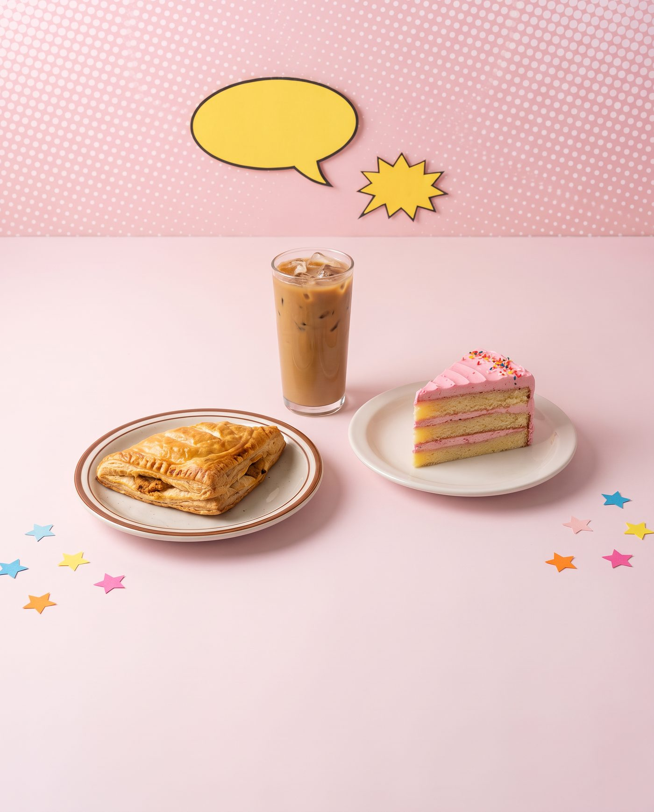
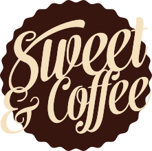
A foto do seu combo é uma promessa para o cliente. Tudo o que aparecer nas imagens oficiais precisa ser o que será servido durante o festival.
Como ela é fotografada é como ela é servida.
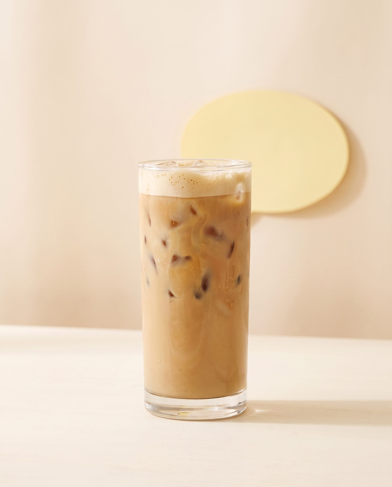
✓ Faça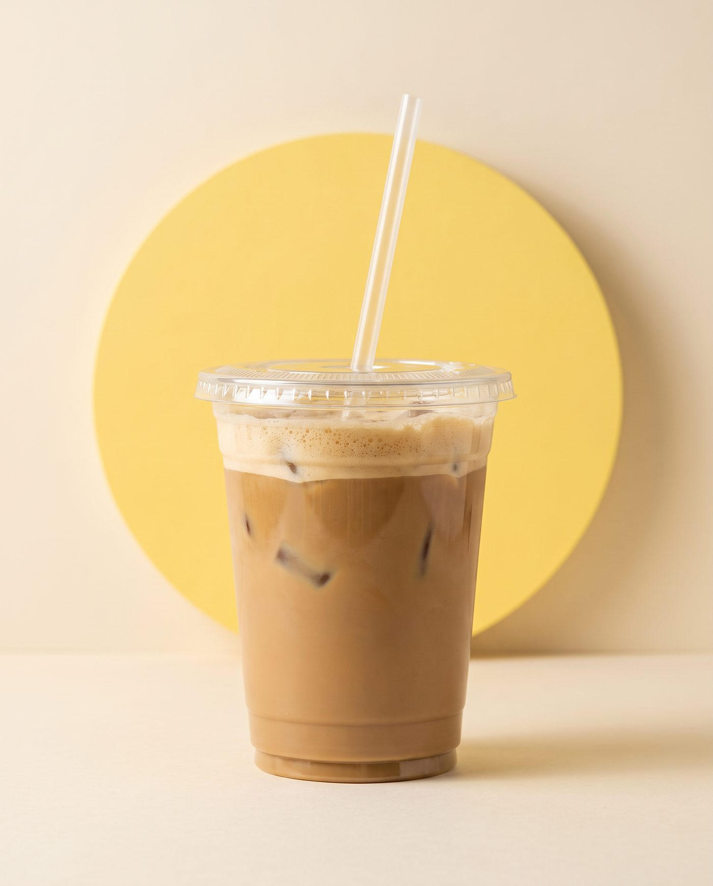
✕ EviteSe houver, defina a embalagem do salgado, do doce e da bebida (tampa, suporte, sacola) e como os itens vão organizados. Se for relevante, ela também pode ser fotografada.
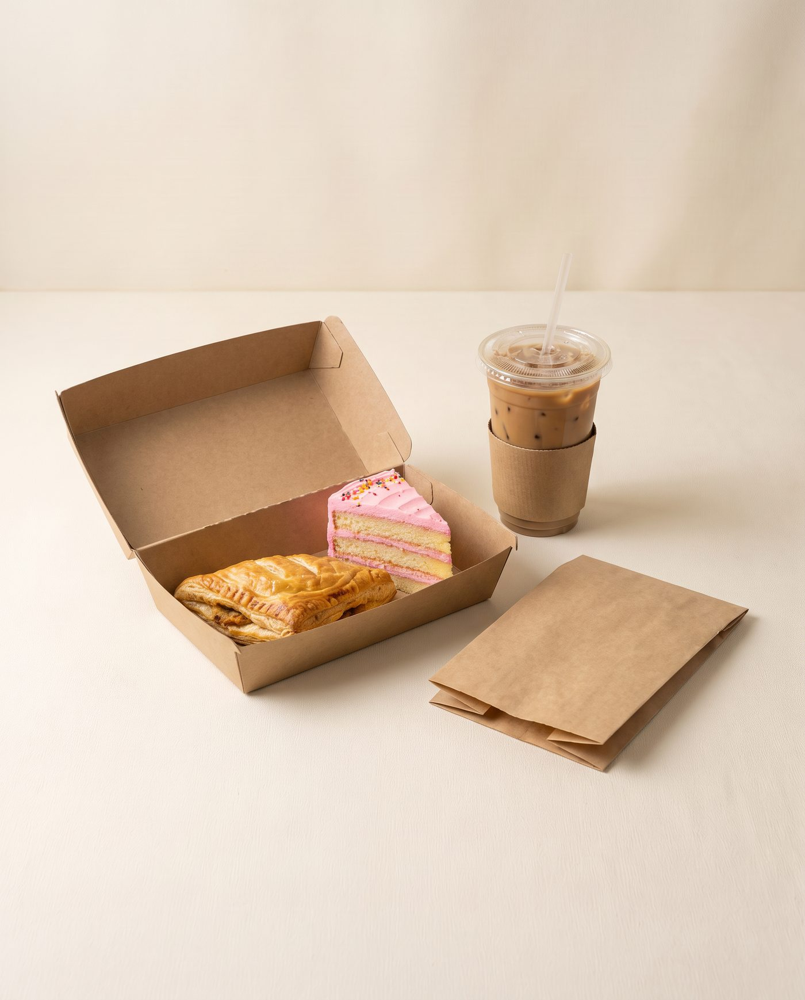
✓ Faça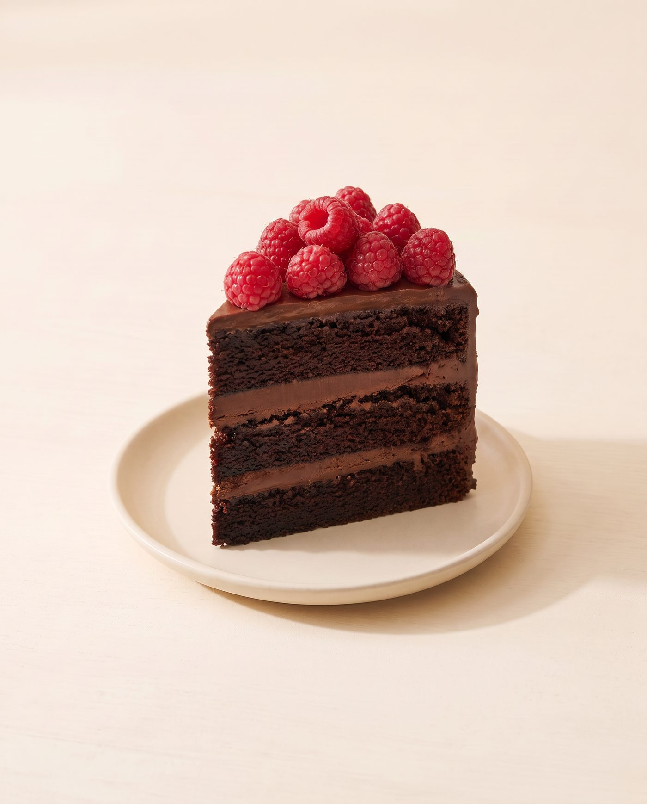
Opção veganaA marca do fornecedor de café não aparece.
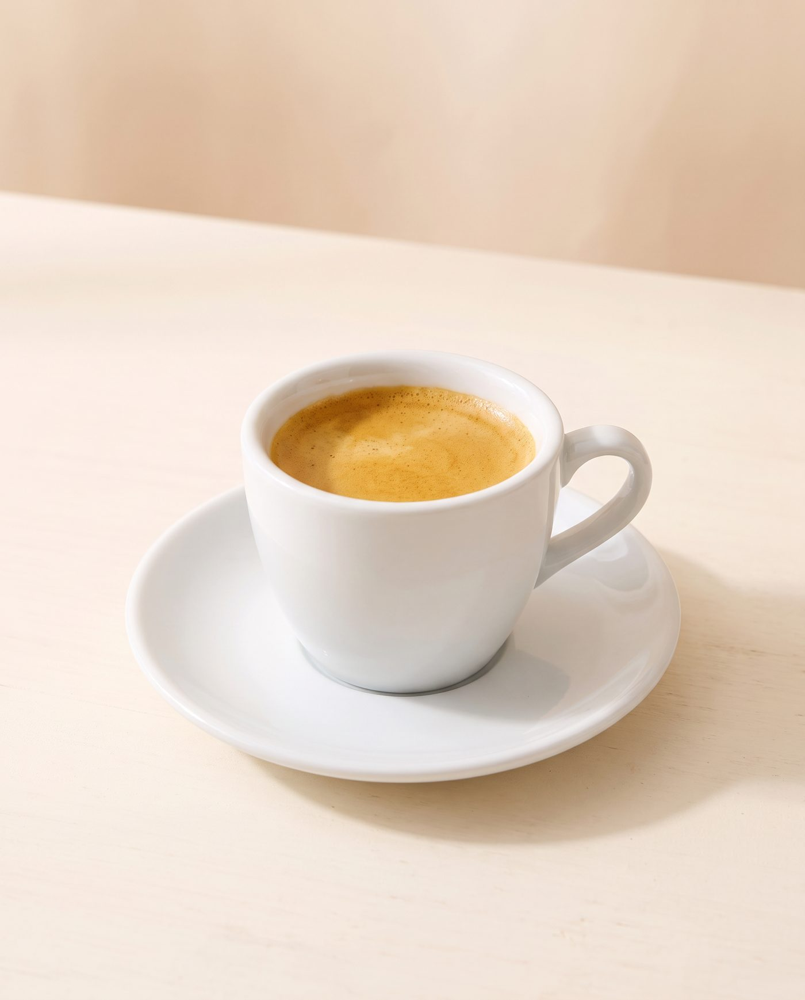
✓ Faça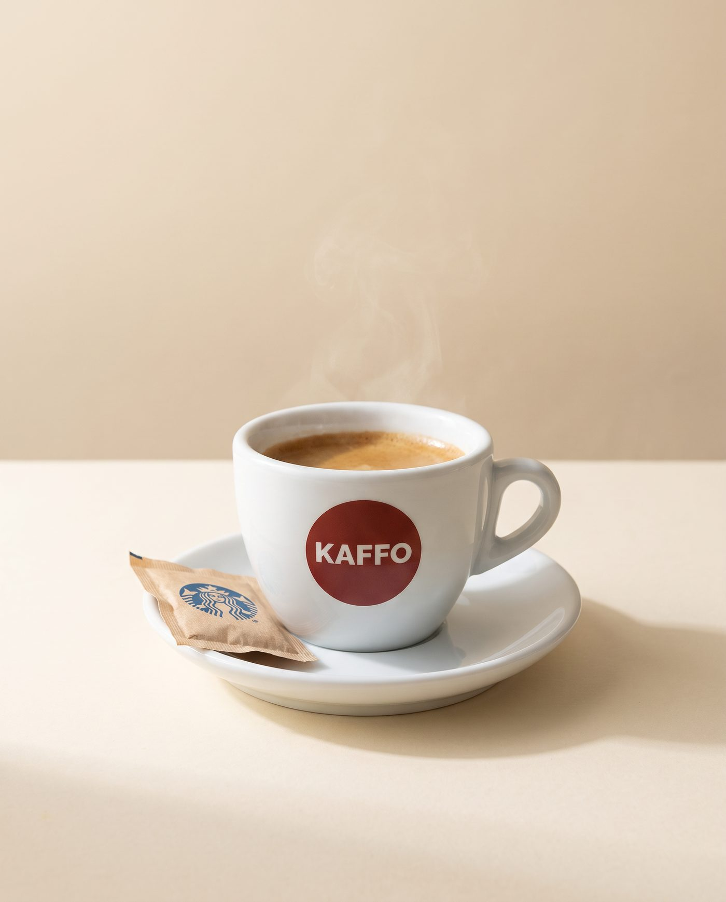
✕ EvitePequenos detalhes aparecem muito na foto: bordas, respingos, migalhas.
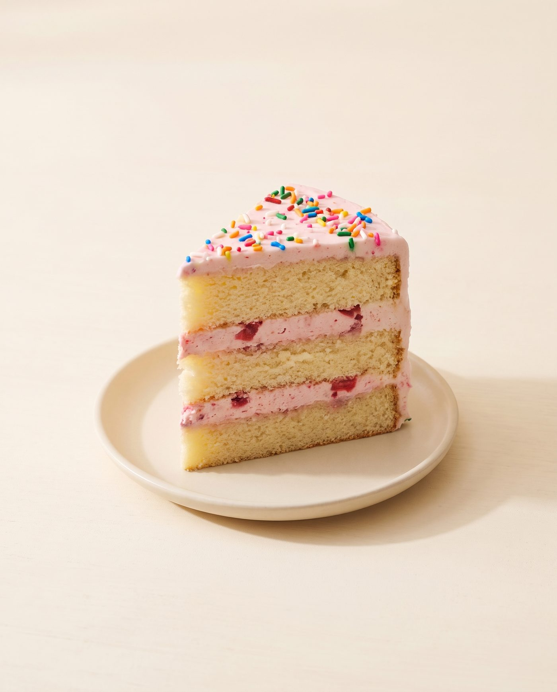
✓ Faça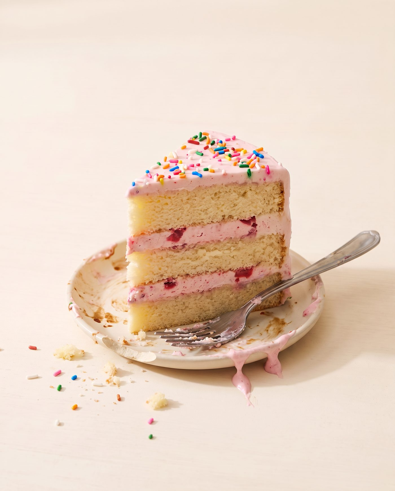
✕ EviteDecore com a identidade da casa e o tema Cartoon, do seu jeito. Não há quantidade certa de objetos: o que vale é equilíbrio, personalidade e comida em destaque.
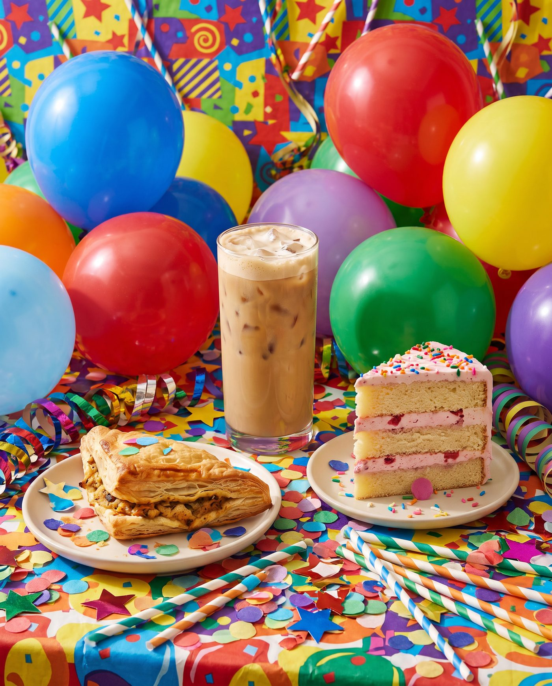
✕ EvitePara o que derrete, murcha, perde crocância, leva chantilly, sorvete ou calda, e para o que precisa ser cortado: uma unidade para a foto inteira, outra para o recheio.
Corte ou abra o produto para mostrar o recheio, na quantidade e no padrão que o cliente recebe.
Café com espuma, bebidas com gelo, milk-shakes e gaseificados: combine com o fotógrafo o momento do preparo.
Libere uma mesa, deixe produtos e louças por perto e tenha na sessão alguém que conheça a receita e o jeito de servir.
A foto cria expectativa. A experiência precisa cumprir essa promessa.
Não se trata de uma versão "melhor" do combo só para a foto: é apresentar da melhor forma o combo que o cliente vai encontrar no Sweet & Coffee Week.
As fotos deste guia são exemplos gerados por IA, só para mostrar a direção. Não são produtos das casas e não entram na divulgação do festival.